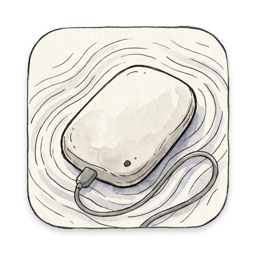

NTFS Editor告別笨重且昂貴的商業商業軟體。透過 macFUSE 核心 VFS 與受保護的 NTFS-3G 引擎，常駐頂部選單列一鍵安全掛載，直接在 Finder 中無縫拖曳複製、修改與管理檔案。
為 macOS 開發者與專業工作者打造，專注輕量、簡潔與系統原生體驗
採用 SwiftUI MenuBarExtra 架構，純 Menu Bar 常駐（不佔用 Dock 空間），點擊即時查閱 NTFS 磁碟健康、掛載狀態與可用容量。
檔案操作全面回歸 Finder。完美支援原生拖曳複製、延伸屬性（xattr）、ResourceFork 雙向傳輸、改名與刪除，不需適應額外檔案總管介面。
切換前安全卸載原唯讀掛載，鎖定 windows_names 與 norecover 等安全旗標；完整驗證磁碟識別與 Probe 狀態，守護資料完整性。
採用 macFUSE 5.5.0 核心延伸驅動（Kernel VFS），具備比傳統用戶態更高的傳輸效能與跨行程穩定性，大容量實體碟讀寫實測通過。
特權掛載輔助程式無 setuid、無常駐 daemon。每次掛載前嚴格校驗二進制 SHA-256 數位特徵，透過管理員權限精確執行。
完全開源，零廣告、無背景遙測追蹤、無收費訂閱機制。程式碼公開受社群檢視，讓你完全掌握硬碟掌控權。
一次性設定，完成後即可永久隨插即用
將 App 拖入應用程式資料夾，並安裝隨附之 Mount Helper 套件與 macFUSE 5.5+。
在開機安全性設定中允許已識別開發者之核心延伸功能，並在「系統設定」允許 macFUSE。
在「隱私權與安全性」將 Helper 加入「完全磁碟取用權」，立即點擊切換讀寫！
| 支援作業系統 | macOS 15.0 (Sequoia) 及以上版本（支援 macOS 15.4+ 及 macOS 27） |
|---|---|
| 處理器架構 | Apple Silicon 原生架構（M1 / M2 / M3 / M4 系列晶片） |
| 核心依賴 | macFUSE 5.5.0+ (Kernel VFS Backend) 與 NTFS-3G 2026.9.28 |
| UI 框架 | SwiftUI MenuBarExtra（Swift 6 Strict Concurrency） |
| 軟體授權 | GNU General Public License v3.0 (GPL-3.0) |